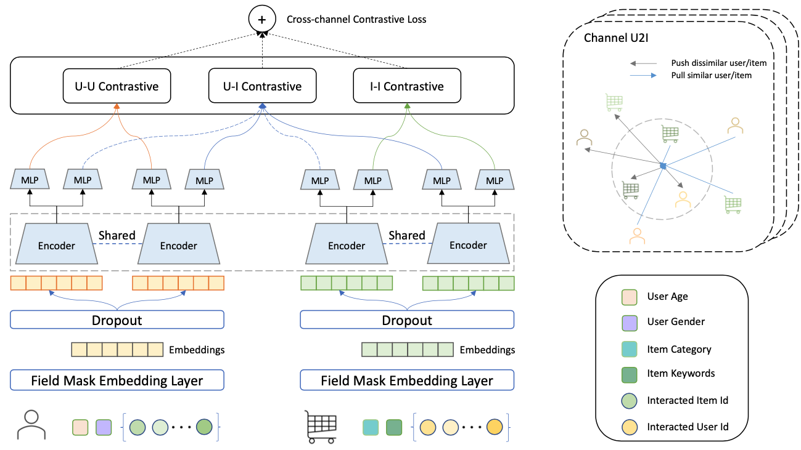
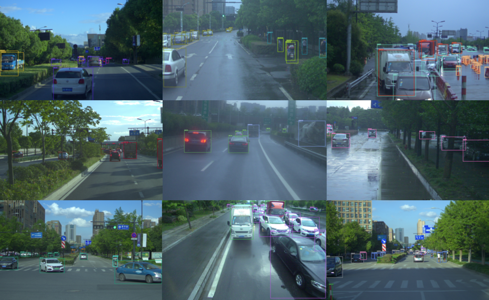
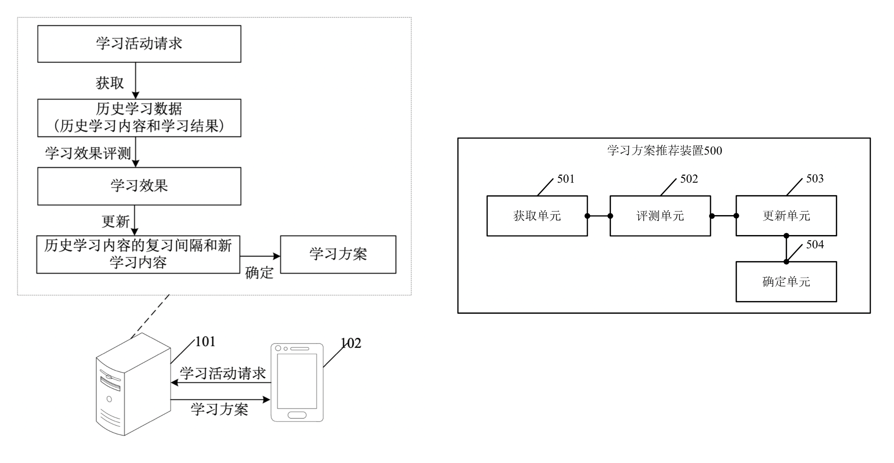

Medial Image Anaylysis Tool.
[code]
I am a first year CS PhD at UC Santa Barbara, advised by Professor William Wang and Professor Miguel Eckstein, at Natural Language Processing Group and Vision and Image Understanding Lab. Previously, I obtained my bachelor’s degree from Chu Kochen Honors College, Zhejiang University, advised by Professor Deng Cai and Professor Mingli Song . I interned at Robotics Institute, Carnegie Mellon University, working with Professor David Held.
My research interests lie in Vision and Language (language grounding, multi-modal), Computer Vision and Robotics (detection, manipulation; self-supervised, lifelong) and Data Mining (recommendation), with the intersection of Cognition.
I'm passionate about building self-learning human-like agent that could understand and interact with our multi-modal dynamic world.
NAACL, 2022 [Openreview]
The Web Conference(WWW), 2022
The Conference on Robot Learning(CoRL), 2020 (* indicates equal contribution) [Paper] [Project Page] [Code]

We present Tactile Slam (tSlam) -- which prepares an agent to acquire information seeking behavior and use implicit understanding of common household items to reconstruct the geometric details of the object under exploration. Using the anthropomorphic `ADROIT' hand, we demonstrate that tSlam is highly effective in reconstructing objects of varying complexities within 6 seconds of interactions.

In this paper, we propose a model-agnostic integrated cross-channel (MIC) approach for the large-scale recommendation, which maximally leverages the inherent multi-channel mutual information to enhance the matching performance.

Our proposed REAL framework for the obstacle detection boosts efficiency both in training and inferencing period with high performance of accuracy. REAL has been deployed on pedestrian and vehicle sensing module of self-driving vehicles of FABU Technology Co., Ltd.

Application Publication Number: CN112052393A
[Patent] [Patent Publication Notification]
The embodiment of the application discloses a learning plan recommendation method, device, equipment and storage medium. The learning effect is evaluated according to the historical learning results and self-adaptive reviews of the target user for the historical learning content, so as to generate the dynamic personalized learning plan. It can be adapted to the user’s learning ability and improve learning efficiency.

A Cross-platform Application for English Learning.
[Drawcall]: optimization based on Cocos Engine
[Mapper] : sourcemap targeted JS Error
[Mirror] : Android Mirror Screen

This Video is for a Multiplayer Online Role-Playing Game, I worked on in 2017 at NetEase. The game, TianYu Mobile can be downloaded here. Enjoy it!
Dancer
Learning dance since young. Then I studied breaking and hip-hop dance in Summer Dance Studio. I am a member of DFM:)
Soccer Player
I committed approximately 15 hours per week to training and provincial soccer ball competitions. I was honored to be elected as Team Captain by coaches for 2018/19 season at Zhejiang University. The beautiful days I'll never forget.

Drummer
I served as a drummer in several bands, including the ZJU Mechanics in 2015, and the OED in 2019.